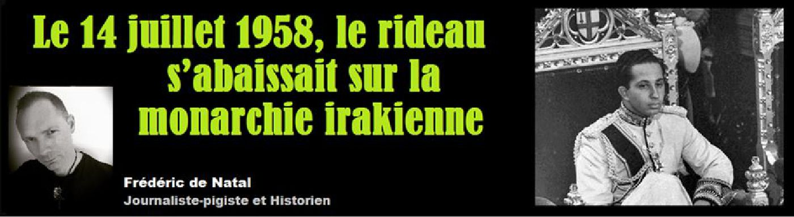
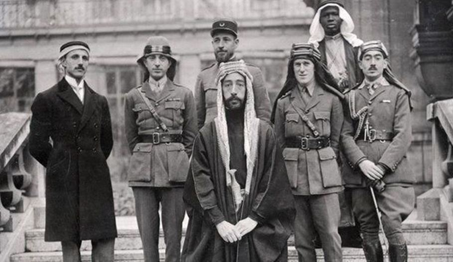
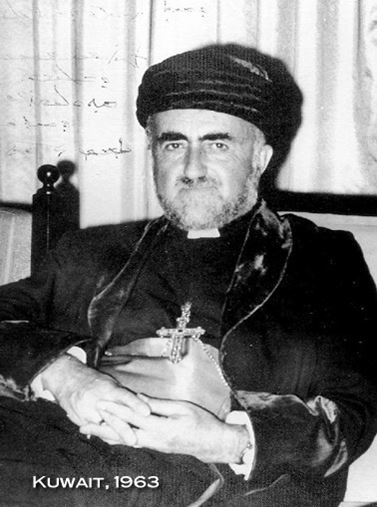
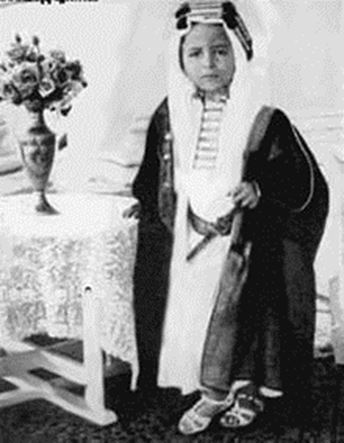
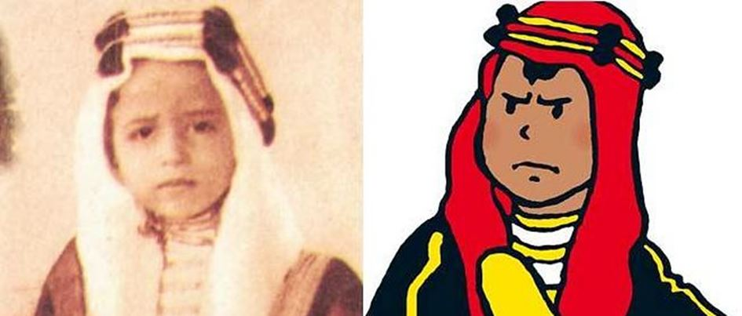
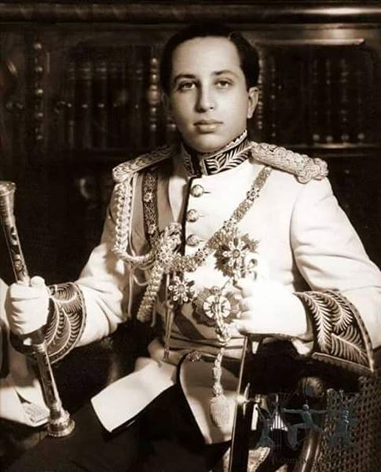
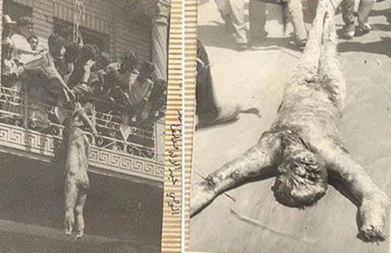

Le 14 juillet 1958, le rideau s’abaissait sur la monarchie irakienne
par Frédéric DE NATAL

Alors que les différents régiments de la république et de l’empire colonial français achevaient de défiler le long de l’avenue des Champs-Elysées à Paris, devant le général Charles de Gaulle et le président René Coty, ces derniers sont avertis qu’un événement tragique vient de se produire au Moyen-Orient. L’Irak, en proie à une révolution, aurait exécuté à la mitraillette le jeune roi Faysal II. À Amman, capitale de la Jordanie voisine, c’est l’effervescence au palais royal. Les frontières sont immédiatement fermées, le roi Hussein Ier vient de décréter la mise en berne du drapeau national tandis son gouvernement annonce à la radio et d’un ton grave à la nation, l’assassinat dont a été victime le cousin du roi.
Bagdad, capitale de l’Irak. Son seul nom évoque les contes des Mille et Une nuits, les douceurs d’un Orient mystérieux et sauvage, le désert, l’aventure et les exploits de ce colonel Thomas Edward Lawrence dont les photos en costume arabe avaient fait fantasmer des centaines de milliers de personnes à travers le monde. Possession de l’Empire ottoman, la grande révolte arabe (1916-1918) avait morcelé ce Moyen-Orient en plusieurs territoires mis sous tutelle européenne. Londres s’était attribué l’Irak en devenir (mandat britannique de Mésopotamie) et, sans tenir compte des disparités ethniques et religieuses de cette nouvelle entité, avaient été cherché l’éphémère roi de Syrie et fils d’un ancien souverain de la Mecque, le sheikh Faysal Ier ben Hussein el-Hachimi, pour le couronner. Un référendum organisé à la va-vite achevant de consacrer la naissance de cette nouvelle monarchie qui empruntait tout au cérémonial britannique jusque dans son hymne.

Le roi Fayçal Ier d’Irak (au centre)
UNE MONARCHIE SOUS INFLUENCE
Très rapidement, la monarchie irakienne sombre dans l’instabilité, oscillant entre volonté de se rendre indépendante de cette tutelle anglaise – dont l’omniprésence dans les affaires intérieures du royaume irrite les nationalistes – et réalité d’une situation qui la rend totalement dépendante du pouvoir britannique. Le massacre de plus de 600 assyriens en 1933, l’arrestation et l’exil de leur leader, le patriarche Mar Eshai Shimoun XXIII (1908-1975), met fin au peu de crédit que la maison Hashémite avait difficilement acquis aux yeux de ses sujets. La mort du roi Faysal Ier fut sujette à caution. Attaque cardiaque ou empoisonnement ? Son fils qui lui succède, Ghazi, ne régnera pas plus de six ans (1933-1939). Il hérite d’un pays en proie au clientélisme et à la corruption en tout genre alors que le panarabisme ne cesse de croître dans le pays.
Le coup d’État du général Sidqi en 1936 va illustrer toute la complexité de la politique locale dans ce qui fut jadis l’antique Empire babylonien. Son assassinat, un an plus tard, sauve la monarchie qui tente en vain de récupérer sa province du Koweït. La découverte du pétrole en grande quantité dans cette partie de l’Irak a décidé les Anglais de la séparer du royaume et former une nouvelle monarchie au profit d’une tribu de bédouins, les Al Sabbah. Une sécession vécue comme une honte nationale et qui reste encore ancrée aujourd’hui dans le subconscient des Irakiens.
« Les Anglais peuvent compter sur la complicité du Premier ministre Nouri Al Saïd. Ce vieux politicien kurde arpente les couloirs du palais royal depuis sa création et manœuvre en coulisse. »
Ghazi fait créer une radio qui ne cesse de critiquer le Royaume-Uni et fera même un pied de nez aux Britanniques en nommant l’ultra-nationaliste Rachid Ali Al Gaylani dans le gouvernement. Londres manifeste son agacement, d’autant que les rapports montrent un nouveau ministre un peu trop sensible aux sirènes de l’Allemagne nazie.
Jamais autant « la perfide Albion » n’aura mérité son surnom. Au sein de la famille royale, les Anglais peuvent compter sur la complaisance et la complicité du Premier ministre Nouri Al Saïd. Ce vieux politicien kurde, ancien ami de Lawrence d’Arabie, arpente les couloirs du palais royal depuis sa création et manœuvre en coulisse. En avril 1939, la mort du roi, victime d’un accident de voiture, est durement ressentie par la population, majoritairement shiite, qui chantera de manière répétitive, tout le long du chemin des funérailles du roi, cette litanie au son prophétique : « Tu devras répondre du sang de Ghazi, Nouri ! ».
Premier chapitre d’un roman qui devait écrire en lettres de sang, le crépuscule d’une maison royale qui bénéficie du seul soutien de la haute bourgeoisie sunnite.
FAYSAL II, UN ROI SANS POUVOIRS
Pour les Irakiens, personne ne doute que le souverain ait été victime d’un assassinat orchestré au sein de la famille royale avec l’assentiment des Britanniques. Preuve s’il en est de la suspicion de meurtre, les médecins refuseront de signer l’acte de décès du roi qu’on leur remettra après son autopsie. La personnalité même du roi Ghazi était l’objet de questions sans réponses. On ne lui connaissait aucune concubine, seulement une épouse avec qui il avait peu de relations intimes et un seul enfant né de cette union. La rumeur publique ergotait allègrement sur la sexualité inavouée de ce roi à l’allure étrangement efféminée et qui irritait particulièrement son oncle, le prince Abdallah devenu régent de son neveu, à peine âgé de quatre ans. Un petit prince dont le visage devait, un jour, servir au dessinateur belge Hergé dans son album Tintin au Pays de l’Or noir.
Avec le déclenchement de la Seconde guerre mondiale, le pays est au centre de l’échiquier politique international, particulièrement celui des allemands qui courtisent tous les mouvements nationalistes arabes. L’Irak ne fera pas exception à cette règle. Une atmosphère de complot envahit le palais royal alors que le pays se retrouve inondé d’une version très édulcorée de Mein Kampf, le livre phare du chancelier Adolf Hitler. La prise du pouvoir par Gaylani en 1940 va compliquer la tâche des Anglais qui imposent au pays un blocus économique, provoquant la chute du premier ministre en janvier 1941. Avec l’aide de l’Abwehr, des officiers pro-nazis irakiens (le « carré d’or ») vont alors perpétrer un putsch trois mois plus tard. Dans une sorte de « 18 brumaire oriental », l’armée investit le parlement et force des députés terrorisés à signer le renvoi du régent.
L’Irak devient le nouveau champ de bataille des forces de l’Axe et des Alliés qui seront finalement victorieux avant de réinstaller au pouvoir, en juin suivant, le gouvernement pro-britannique de Nouri Al Saïd. Une victoire déterminante pour les Alliés qui en profitent également pour chasser le premier des Pahlavis de son trône iranien et dont le contrôle des champs de pétrole va leur permettre de battre les troupes du maréchal Rommel.
Nouri Al Saïd devient le faiseur de gouvernement (le pays aura connu 58 cabinets entre le 23 août 1921 et le jour de sa chute) et s’oppose directement au régent. La reconnaissance de l’État d’Israël ne se fait pas sans heurts à Bagdad. Comme l’ensemble du monde arabe en 1948, la monarchie hachémite s’y oppose. Elle prend fait et cause militairement pour les Palestiniens non sans pertes et fracas. La défaite est humiliante pour ces troupes royales peu armées et mal préparées.
La majorité du roi Faysal II (1953) ne changera rien. Le roi est la marionnette involontaire de la rivalité politique entre Al Saïd et Abdallah ; un conflit qui fragilise son pouvoir. Arrestations d’opposants, censure, interdiction des partis non royalistes et avec ses coûteux projets de développement, Faysal II s’aliène les classes populaires et la moyenne bourgeoisie émergente. La signature du Pacte de Bagdad en 1955 n’est guère appréciée parmi les Irakiens. Ce pacte signé entre quatre pays musulmans (Pakistan, Turquie et Iran) est vécu comme un renforcement de la mainmise tutélaire occidentale sur le pays.
FAYÇAL II
À la veille de la révolution, la monarchie irakienne offre d’ailleurs un triste spectacle d’elle-même. Elle n’a pas concrétisé son objectif, celui de prendre son indépendance. La pauvreté a atteint un niveau rarement inégalé. Les partis d’opposition, du parti communiste au nationaliste Baas, ont investi progressivement l’appareil d’État. Le Moyen-Orient est en pleine crise. Le Liban est bord de la crise institutionnelle avec un président pro-occidental contesté, Camille Chamoun (1900-1987). La Syrie s’attend à être attaquée conjointement par la Turquie et l’Irak et, le 14 février, la monarchie irakienne surprend en annonçant la création d’un royaume associé irako-jordanien, soutenu par le Royaume-Uni qui espère ainsi pouvoir s’opposer indirectement à la montée du panarabisme. Un rêve que caressaient déjà les deux cousins depuis les bancs d’école. La crise de Suez (1956) a accentué le sentiment nationaliste chez les irakiens notamment parmi les officiers de l’armée qui n’acceptent plus que tous ces conseillers européens, la plupart membres du conseil d’administration de l’Iraqi Petroleum Company, entrent au palais comme on entre dans un vulgaire moulin. Le gouvernement irakien tente de rassurer ses partenaires européens. Le régime est stable, le roi va se marier avec la princesse royale Sabiha Fazila d’Egypte.
UNE RÉVOLUTION AU SON DE LA MARSEILLAISE
Le 13 juillet 1958, commandées par le Brigadier- Général Abd El Karim Kassem, les forces armées irakiennes commencent à se diriger vers la Jordanie, suite à la demande du roi Hussein. Le roi Faysal II et son premier ministre s’apprêtant à partir pour les États-Unis. Mais au lieu d’aller sécuriser la frontière jordano-libanaise, les forces armées irakiennes prennent la direction de Bagdad qu’elles investissent le lendemain. Réveillé en urgence à 5 heures du matin, Faysal II apprend le soulèvement de la 20e Brigade de la 3e division armée irakienne, commandée par le Colonel Abdel Salam Aref et de la 19e Brigade du Brigadier-Général Kassem. La radio investie, passe en boucle un message enregistré qui annonce déjà la fin du « vieux régime ».
La Marseillaise qui marque chaque fin de communiqué ne cache pas le caractère révolutionnaire de ce putsch d’autant que la date n’a pas été choisie au hasard. Le 14 juillet, date anniversaire de la prise de la Bastille, un fort symbole de la révolution française précédant l’abolition de la monarchie en 1792 avec en point d’orgue, l’exécution du roi Louis XVI et de la reine Marie-Antoinette, quelques mois plus tard. Les « officiers libres » dessinent déjà le futur de la monarchie irakienne.
Les Européens commencent à fuir le pays et traversent la frontière jordanienne au fur et à mesure que les heures s’égrènent petit à petit et au rythme des événements qui se succèdent. L’armée (qui bénéficie du soutien du Président égyptien Gamal Abdel Nasser) a pris position dans toute la capitale. La statue du général Frederick Maude, qui avait libéré Bagdad du joug ottoman en 1917, a été mutilée, déboulonnée de son socle et des chaussures symboliquement accrochées à son écusson martelé de coups de marteaux.
« Les rebelles exigent l’abdication du roi mais, tout en parlant avec eux, le prince Abdallah donne des ordres discrètement. La garde royale, cachée sur les toits se met alors à tirer sur les rebelles qui répliquent. »
Rapidement deux détachements militaires se dirigent vers le palais Al Rahab de Bagdad et la résidence du Premier ministre Nouri Al Saïd. Les capitaines Monther Saliem et Abdoul Sattar Saïb Ogoozy encerclent le palais royal (protégé par un millier d’hommes) avec des tanks, de l’infanterie et des canons anti-chars. Ils informent alors l’officier de garde qu’ils souhaitent parler au roi, lequel les autorise à rentrer. Sur le chemin, le régent Abdallah, son arme à la main, est debout au milieu du jardin anglais, sous un olivier. Sa résidence a été attaquée et pillée. Il pense pouvoir négocier sa vie avec les « officiers libres » qui commandent le soulèvement et celle de son neveu, comme le fit Farouk Ier d’Égypte lors du coup d’État qui l’avait poussé à l’exil en 1952. Les rebelles exigent l’abdication du roi mais, tout en parlant avec eux, le prince Abdallah donne des ordres discrètement. La garde royale, cachée sur les toits se met alors à tirer sur les rebelles qui répliquent. Des bombes et roquettes explosent dans le parc. Le roi, épouvanté, se réfugie en hurlant dans la cuisine du palais. Il est incapable de prendre une décision alors que le palais se vide progressivement de ses gardes. La situation lui échappe tandis qu’un début d’incendie, provoqué par les bombardements, ravage la salle des gardes.
Le palais royal est immédiatement investi par les militaires et livré à leurs vindictes. Faysal II ordonne que la garde royale commandée par le colonel Taha Al Barmani stoppe toute résistance. Sorti de sa cachette, le jeune souverain est traîné à l’extérieur et poussé vers un mur de l’enceinte royale. Il est apeuré, il ne cesse de pleurer. Faysal II sent le souffle de la mort lui parcourir le corps. La princesse Niyam, épouse du régent, et la tante du roi, la princesse Abadiya, sont trouvées dans une chambre et sont sorties tout aussi promptement du palais avec leurs domestiques. Tous sont alignés devant ce mur blanc alors que se forme un peloton de quelques militaires. Sans un mot, sans un ordre, ils pointent leurs mitraillettes vers les membres de la famille royale et tirent quelques rafales. Plus de 28 balles vont joncher le sol des jardins du palais. Le roi s’effondre, le visage face contre terre, les yeux ouverts. Il gémit, il n’est que blessé. Abdoul Sattar Saïb Ogoozy, qui s’en vantera, s’avance et l’achève d’une balle dans la nuque. Le roi n’avait que vingt-trois ans. La princesse Niyam, blessée, se traîne péniblement derrière un buisson et tente de rejoindre la salle des gardes, en vain. Le régent, touché au dos, est mort sur le coup. L’affaire n’a duré que vingt minutes à peine, suffisamment pour que les habitants de Bagdad se soient rassemblés et pillent le palais royal.
A 8 heures du matin, les corps du souverain et du régent sont mis à l’arrière d’une jeep encore marquée des armoiries du roi. Livré aux habitants, le corps du régent sera jeté à terre par une foule en colère, mutilé, pendu devant le ministère de la défense, arrosé d’essence puis plongé dans le Tigre, ce fleuve qui borde la capitale. Celui du roi sera enterré discrètement dans un des fossés des jardins militaires de l’hôpital de la capitale et reste toujours sans sépulture à ce jour. Le Time Magazine du 21 juillet 1958 rapporta ainsi la scène dans ses colonnes : « le peuple traîna le corps d’Abdallah dans la rue (al-Rashid) comme celui d’un chien et le déchira membre par membre. »
Ce 14 juillet 1958, la radio continue de déverser des messages de haine sur la famille royale et cette inlassable Marseillaise qui ne semble pas avoir de fin : « Ici la République d’Irak. C’est votre jour de victoire et de gloire. L’ennemi de Dieu et son maître ont été tués et gisent dans la rue. » À 9h40, un autre intervenant affirmait sans complaisance aucune :
« Citoyens, les chefs de votre armée déclarent que votre pays a, pour la première fois dans son histoire, mis fin à un régime de corruption et qu’il a commencé à se libérer de la clique dirigée de l’étranger qui avait fait de lui une vache à lait dont les impérialistes et leurs agents tiraient leurs richesses. »
À Paris, le défilé militaire venait à peine de commencer. Alors que l’aviation entame son premier passage, déversant avec elle son nuage de fumée tricolore, un homme franchi les barrières de sécurité et se précipite vers la tribune officielle. Dans les mains de ce nationaliste vite maîtrisé, le futur drapeau d’une Algérie indépendante. Les câbles continuent d’arriver au Quai d’Orsay. On note la présence d’importantes caisses d’armes en provenance de Tchécoslovaquie. Il ne faisait pas doutes de l’implication de l’Union soviétique dans ce coup d’État pour lequel les services secrets américains avaient été pris par surprise.

Des photos du corps de Nouri Al Saïd, atrocement mutilé, sont diffusées jusque dans la presse française
Restait à retrouver le Premier ministre Nouri Al Saïd. Son palais ayant été occupé aux premières heures de la révolution, il avait pu échapper aux militaires via une porte dérobée qui menait directement vers le fleuve. Dans sa fuite, il a laissé derrière lui femmes et enfants. Un de ses fils, vingt-sept ans, aux allures de play-boy et que l’on a vu la veille avec une jolie rousse anglaise, est abattu immédiatement. Al Saïd rejoint l’ambassade d’Iran qui refuse toutefois de lui accorder l’asile. On lui fournit un habit noir de femme qu’il revêt. La traque durera deux jours. Et c’est un enfant qui, intrigué par cette femme portant chaussettes et chaussures d’homme, va le reconnaître. Il donne l’alerte. Nouri Al Saïd et ses deux compagnes sont suivis, montrent des signes de nervosité. Le Premier ministre perd son sang-froid, sort un pistolet et tire en l’air. La foule accourt, l’encercle et commence à le lyncher. Il ne survivra pas à ses blessures et comme le régent, il sera pendu. Son corps mis sur la route est défiguré après qu’un bus lui passe dessus à plusieurs reprises.
Le magazine Paris-Match du 2 août 1958 affichera dans ses pages la photo du Premier ministre, nu et suspendu à son balcon par les bras. Le meurtre de Nouri Al Saïd venait de mettre fin à l’expérience monarchique de l’Irak. Parmi, les autres victimes de ce coup d’État, on peut encore citer le Vice-premier-ministre Ibrahim Fashim, le ministre de la Défense de la Fédération, Souleiman Tukan, la Princesse Khadija (née en 1907, sœur du régent), des dizaines d’inconnus. La quasi-totalité de la famille royale sera massacrée dans ce putsch sanglant. Seule la famille du Prince Ali (1918-1998), dont son fils de deux ans Sharif Ali Ben Al Hussein, échappera à ce massacre et se réfugiera à Londres. C’est lui qui, aujourd’hui, incarne tous les espoirs du mouvement monarchiste irakien.
Le général Abdul Karim Kassem et le général Aref se sont emparés du pouvoir et ont proclamé la république. Le premier le conservera jusqu’en 1963 avant de subir le même sort que le roi, sur ordre du second. Les pièces d’un nouveau jeu de dupes sur fond de Guerre froide venaient de se mettre en place. Le rêve de Lawrence d’Arabie d’une nation arabe unie et fédérée venait de s’envoler dans les volutes de cette fumée noire qui s’échappait encore du palais royal. Une autre histoire était désormais en marche et elle allait bientôt porter le nom de… Saddam Hussein.
Partager cette page